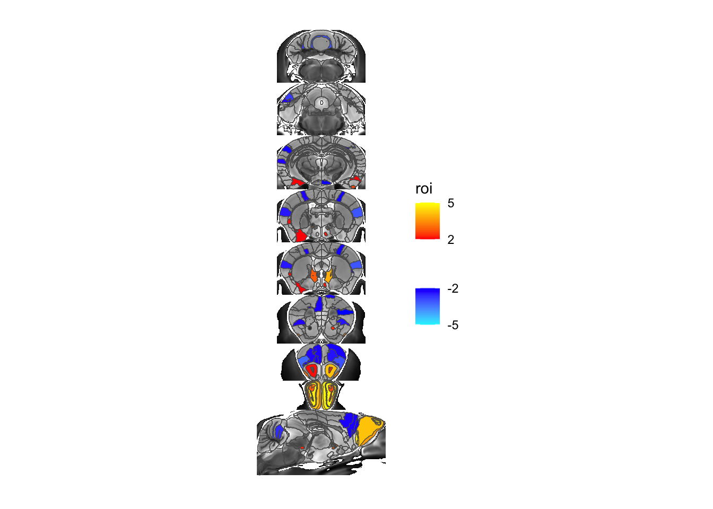

devtools::install_github("Mouse-Imaging-Centre/MRIcrotome", ref="ggMRIcrotome")I’ve been rewriting MRIcrotome, our package for visualizing brain slices, and it’s time to introduce it to the world. But first, some history and background.
Quick history of MRIcrotome
Early versions of RMINC included a way to display a slice series. While quite handy, it lacked flexibility. And so MRIcrotome was born, the portmanteau describing what it did well: describe a way to slice up 3D MRI scans to display in 2d. It was written from the ground up in grid graphics, providing ultimate flexibility in creating visualizations.
That flexibility came at the cost of having to reinvent many wheels. This was particular around legends - the code for displaying a series of slices was quite simple compared to the code of displaying the colour bar. This came to a head when I wanted to implement code to display brain segmentation outlines on top of brain slice: clearly doable, but nicely done already within many mapping libraries (such as sf) that starting from scratch seemed silly.
So I started again, inspired primarily by vaguely remembered code from Yohan Yee, who had long ago shown examples of how to display beautiful brain slices in ggplot. Additional inspiration came from ggseg, a package that does a nice job of showing 2d renderings of brain surfaces and slices, but (as far as I can tell) focuses on pre-existing atlases over flexible display of arbitrary slices and atlases.
Installation
The code still lives in its own github branch, and, full warning, the interface is most definitely liable to change. To get the current version you need the following:
You will also need the following packages installed:
- ggplot2
- sf
- terra
- tidyterra
- smoothr
For those of you on Oxford’s clusters you’ll find this development version of MRIcrotome already installed, so don’t need to do anything.
Data loading and modelling preliminaries
Before getting into visualizing let’s first load some data and run some models so that we have something to work with. I’ll work with the Sex Chromosome Trisomy mouse model, also discussed here.
# load the libraries
library(tidyverse)
library(RMINC)
# base dir where files are kept
basedir <- "/Users/jason/data/"
gf <- read_csv(paste0(basedir, "mbase-pairwise/SCT.csv")) %>%
mutate(localJacobians = paste0(basedir, localJacobians))Now let’s load the segmentations
# nlin and label file
labelFile <- paste0(basedir, "mbase-pairwise/scanbase_second_level-nlin-3_labels.mnc")
nlinFile <- paste0(basedir, "mbase-pairwise/scanbase_second_level-nlin-3.mnc")
# definition files
defs <- "/Users/jason/data/atlases/Dorr_2008_Steadman_2013_Ullmann_2013_Richards_2011_Qiu_2016_Egan_2015_40micron/mappings/DSURQE_40micron_R_mapping.csv"
abi <- "/Users/jason/data/atlases/Allen_hierarchy_definitions.json"
# load the volumes - just integrating Jacobians here, for most projects
# you'd want to use the voted labels instead
allvols <- anatGetAll(gf$localJacobians, labelFile, defs=defs)
# make the atlas definitions hierarchical
hdefs <- makeMICeDefsHierachical(defs, abi)
# and add the volumes to the hierarchy
hvols <- addVolumesToHierarchy(hdefs, allvols)And finally we can run some linear models - first at every voxel, then at every part of the segmentation. We’ll model the data as Gonads (Testes vs Ovaries) plus X and Y chromosome dose.
# load label and nlin volumes
labelVol <- mincArray(mincGetVolume(labelFile))
nlin <- mincArray(mincGetVolume(nlinFile))
# run a linear model on the relative jacobians
vs <- mincLm(localJacobians ~ G + X + Y, gf, mask=labelFile)Method: lm
Number of volumes: 181
Volume sizes: 241 478 315
N: 181 P: 4
In slice
0 1 2 3 4 5 6 7 8 9 10 11 12 13 14 15 16 17 18 19 20 21 22 23 24 25 26 27 28 29 30 31 32 33 34 35 36 37 38 39 40 41 42 43 44 45 46 47 48 49 50 51 52 53 54 55 56 57 58 59 60 61 62 63 64 65 66 67 68 69 70 71 72 73 74 75 76 77 78 79 80 81 82 83 84 85 86 87 88 89 90 91 92 93 94 95 96 97 98 99 100 101 102 103 104 105 106 107 108 109 110 111 112 113 114 115 116 117 118 119 120 121 122 123 124 125 126 127 128 129 130 131 132 133 134 135 136 137 138 139 140 141 142 143 144 145 146 147 148 149 150 151 152 153 154 155 156 157 158 159 160 161 162 163 164 165 166 167 168 169 170 171 172 173 174 175 176 177 178 179 180 181 182 183 184 185 186 187 188 189 190 191 192 193 194 195 196 197 198 199 200 201 202 203 204 205 206 207 208 209 210 211 212 213 214 215 216 217 218 219 220 221 222 223 224 225 226 227 228 229 230 231 232 233 234 235 236 237 238 239 240
Done# run a linear model on the ROIs, covarying for brain volume
hlm <- hanatLm(~ G + X + Y, gf, hvols)N: 181 P: 4
Beginning vertex loop: 590 5
Done with vertex loopIntroducing MRIcrotome and MRIcroscope
The revised MRIcrotome package separates the display of slices into two steps: (1) MRIcrotome, slicing up the 3D brain into 2D slices, and (2) MRIcroscope (sorry …) for taking those slices and displaying them using ggplot and friends on the back-end.
So let’s slice up the brain.
First we load the necessary libraries:
library(MRIcrotome)
library(terra)
library(sf)
library(smoothr)
library(data.tree)Then we slice and dice the brain
sliceList <- MRIcrotome(nlin, labelVol, hvols,
list(c(100,2), c(150,2), c(200,2), c(250,2), c(260, 2), c(300, 2), c(325,2), c(350,2), c(150,1)))MRIcrotome takes four required arguments:
- The anatomy volume.
- The label volume.
- The hierarchical label definitions.
- A list of slice locations. Each slice is itself a vector consisting of the slice number and the dimension.
Let’s take a look - we’ll show the background anatomy, an overlay of the atlas, and the ROI based output for the gonads term.
MRIcroscope(sliceList) %>%
add_anatomy(low=500, high=1400) %>%
add_roi_outline() %>%
add_roi_overlay(data=hlm, column=tvalue.GM)Coordinate system already present. Adding new coordinate system, which will
replace the existing one.